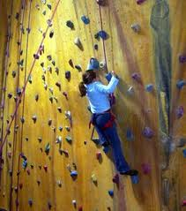

Types of Climbing
Indoor versus Outdoor
This is exactly what it says on the tin. Most people start climbing indoors, at rock climbing gyms. These places have walls built of plywood with plastic or stone holds (grips) attached to the walls. These walls usually have marked routes, graded for the difficulty of the climb. Indoor gyms usually have all of the equipment you need, available for rent or purchase. They also often offer classes for beginners. You can climb in all weather, at all skill levels, in a safe and controlled environment. Most gyms charge a fee for a day pass, ranging from $4 to $17, which covers entrance into the gym. They will also rent you gear like a harness or shoes for a small additional fee. The Raleigh/Durham area has several good gyms. See where to climb in the triangle for more information.
Indoor gyms often have minimum age limits; most do not allow children under age 4 to climb. A child must also be large enough to wear a climbing harness. There are special full-body harnesses designed for young climbers.
Once you become more comfortable climbing indoors, you may want to try a real rock. Several state parks in the area, including Pilot Mountain and Stone Mountain, offer climbing walls. Outdoor climbing requires some extra equipment and training, so you may want to go with a group or a guided trip.
Top Rope
This is what most people think of as traditional climbing, and it is where most people start. In top rope climbing, the climbing rope is secured at the top of the route through a bolt or anchor. A climber attaches him or herself to one end of the rope and climbs up toward the anchor. Another person, the belayer, stands on the ground and holds the end of the rope. It is the belayer's job to take in extra rope, and catch the climber in case of a fall. The belayer also lowers the climber back to the ground when they have completed the route (or have gotten too stuck to continue).
Some gyms also have machines called autobelay devices that do the work of belaying automatically. Be sure to ask the staff at the gym how to clip into the autobelay device properly. Autobelay devices have many safety features designed to prevent falls and to lower the climber slowly to the ground. The speed you travel depends on your weight--a heavier adult will come down faster than a lighter one. Very small children may not weigh enough to trigger the autobelay device. Be sure to check with the gym staff if you are climbing with a young child.
Bouldering
Bouldering is "sideways" climbing. Instead of going up a wall, you traverse the path sideways, usually only a few feet off the ground. You do not need a harness, rope, or belay partner when bouldering, making it one of the few rock climbing exercises you can do solo. It is also a good way for new climbers to build skill and confidence. Bouldering routes tend to be more technically challenging than top climbing routes.
Lead Climbing
When you lead climb, instead of hanging off a rope anchored at the top of a route, you bring your rope with you! A lead climber climbs up a route carrying a rope and hooking into the wall as they go. They still climb with a belayer. Indoors, climbers clip the rope into bolts attached to the wall. Outdoors, they may place their own anchors as they go. Lead climbing is a much more technically challenging than top rope or bouldering. You should wait until you are comfortable with top rope climbing before you try it.